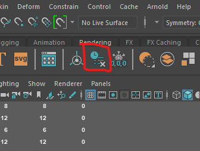
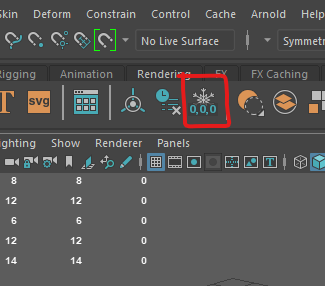
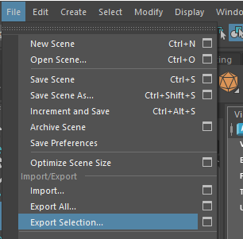

All the machines in the lab have Maya installed, if you want you use your own machine follow the installation guide.
Make sure you have a mouse.
By default 1 unit in Maya is 1 centimetre. This means that if you make a cube 1 high and import it into Unity it will be 1cm high.
If you are making large objects, building or vehicles it can be useful to change the units to meters.

Before We export our model we need to do a few things to make sure it will import easily into Unity.
First save your scene under a new name, this is because we will be making some changes that you you don't want if you need to edit your model later.

The history keeps track of changes you make to your model but it can make your file bloated. Delete it by selecting your model and pressing the Delete history button.

When making your model you may have scaled some of the pieces. Before exporting the scales all need to be reset to 1. To do this press the Freeze transforms button.

If we want to import our model into a different program the best format to choose is an FBX file.
To export you model:

You can now import the FBX file into Unity.